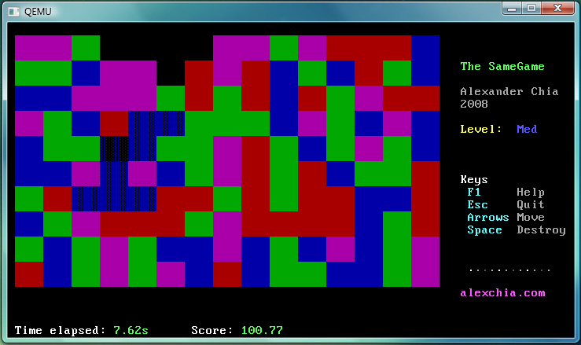
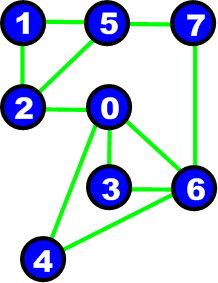
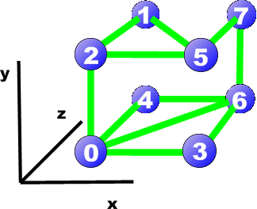

This page isn't updated as frequently as I would like. I apologize if some of the material below is outdated.
Here's a demo reel of some of my recent real time rendering efforts.
Items in the demo: - Instant radiosity |
Features of the Progressive Photon Mapper (Hachisuka et. al, 2008): (implemented via CUDA kernels)
- Tausworthe and LCG hybrid PRNG
- Fast lookup of photons via Axis aligned
bounding boxes and stencil routing
-
Progressive Radiance Estimate, Russian roulette
- Adjustable number of photons fired per frame which directly influences rendering speed/frame rate
Several other projects I have done previously are listed below.
| Distributed computing | |||
| Hadoop wikipedia search | Java | Feb 11 | Searching for a query page in wikipedia via n-grams. Used the Hadoop MapReduce framework. |
| CUDA image filtering | C++, CUDA | Feb 11 | Applying a filter to an image via a fast fourier transform, convolution in the frequency domain, followed by an inverse FFT. Performanced sped up 100x via the use of CUDA. |
| Graphics / Games | |||
| Foldit | C++, OpenGL, Python | Spring 09 | Game design and development of new features for Foldit, a 3d game which uses human computation to optimize protein folding and protein engineering. Worked under the supervision of Prof. Adrien Treuille from CMU. |
| Perlin Cloud Shader | C++, DirectX 9.0c, HLSL | Oct 08 | An experiment with procedurally generated clouds. Uses: DirectX texture filtering, rendering to surface, fragment shaders. Handles lost/reset devices appropriately, and manages memory and resource allocation. I've included a simple postprocessing bloom demo which I created which uses this class. |
| Toon shader | C++, OpenGL, GLSL | Oct 08 | Project I created from scratch as a teaching assistant for the computer graphics course 15-462 in Carnegie Mellon University. Involves students coding a phong shader based on the Phong illumination equations and a toon shader sampling from generated textures. |
| O3D | C++, DirectX 9.0c, OpenGL, HLSL, Python |
Summer 08 | I worked on O3D at Google Mountain View during the summer of 2008. It was previously known as Client3d then. O3D is an open-source web API for creating rich, interactive 3D applications in the browser. It is able to render high-end graphics via the programmable pipeline using a scene graph interface which is usable by the entry-level developer, but yet flexible enough to offer many options to the experienced graphics engineer. |
| Raytracer | C++, OpenGL | April 08 | Wrote a ray tracer that uses the Phong-Blinn Illumination Model. Features: Soft shadows, antialiasing, custom models, custom geometry, triple bounce specular lighting, reflection, refraction. |
| Misc. Network Games | Visual Basic | '98 - 04 | I wrote many network games during my spare time in middle school using the easiest protyping language available to me at that time, Microsoft's Visual Basic 6.0. |
| Systems | |||
| IRC server | C | Spring 09 | Implemented a subset of the RFC for the IRC protocol specification. |
| Pebbles Kernel | C, Assembly | Fall 08 | Coded an entire kernel from scratch, fully pre-emptive, with a threading library, keyboard, console, and timer drivers. Optimizations used: Zero Fill On Demand paging, scheduler mutexes, and the lmm memory allocation library for managing kernel memory. Uses the Pebbles bootstrapper. |
| Same Game | C, Assembly | Aug 08 | Coded keyboard, console, and timer drivers in preparation for the kernel project. Installs appropriate trap handles the IDT. Compiled together with a sample kernel (sans the drivers). Implemented the SameGame on top of everything. Compiled kernel available for download. |
| Algorithms | |||
| Optimizing brain neurons | C# | Jul 07 | My entry for the Microsoft ImagineCup 2007 algorithm competition, involves metaheuristic algorithms (simulated annealing) and search pruning. Top 6 in World Finals. |

Formerly worked under the supervision of Prof. Adrien Treuille from CMU, in collaboration with a group of computer and bioengineering scientists from the University of Washington.
Achieved a 250% FPS increase through performance and rendering optimizations.
Done:
- Graphics Pipeline Optimization
- Geometry / Primitives Optimization
- Refactoring explicit spline vertices into indexed vertex buffers
- Reduction of vertex count via "Billboarding"
- Rescoping synchronization primitives
- Improved scoping of recursive mutexes
- Profiling / Performance Management
- Identification of Performance Bottlenecks
- Improved Graphics/UI
- Improved outline rendering for several primitives without FPS drop
- Implementation of features for new Design mode
- Mesh simplification of isosurfaces tessallated via Marching Cubes
Experimentation with computer graphics has always been one of my greatest distractions from homework, but something that always sinks me back into that beautiful world of computer graphics.
Here I experiment with using Perlin Noise to procedurally render realistic looking clouds. First random noise is generated on a texture. After using a clever hack to use texture blending on the noise effect to generate blended octaves of noise, I render the resulting image onto a render target and post process the entire texture with a pixel shader.
I compiled everything into a PerlinCloud class which has public function prototypes
PerlinCloud(LPDIRECT3DDEVICE9 d3d_device, int width, int height);
~PerlinCloud();
LPDIRECT3DTEXTURE9 RenderTexture(unsigned long elapsed_time);
void OnLostDevice();
void OnResetDevice();
and a couple other functions to tweak the cloud parameters.
As can be seen from above, RenderTexture returns the handle to a texture which can be used to texture anything in a scene during render time. The class also manages object memory correctly when the device is lost/reset.
The results when the texture is mapped onto a cylinder is as shown below.
The sample is from Microsoft's DirectX SDK tutorial 5 - to show how easily the PerlinCloud class can be incorporated into other programs. I simply replaced Microsoft's default "yellow spots" texture with the texture handle from RenderTexture().
Dynamic Perlin Clouds
rendered on a texture, mapped onto a cylinder
I also incorporated this class into a small post-processing bloom demo that i created. (below)
Note that this is entirely procedurally generated.
Bloom effect created via a high pass filter,double Gaussian blur, saturation enhancement,
and addition back to the source image.
Shaders written in HLSL.
The Bloom effect is much clearer when rendered high resolution in realtime.
I have made this available for download: BlizzBloom.zip^
(Requirements: DirectX 9.0c, Pixel Shader 3.0)
^MD5 checksum: 07DE358A2C470830F379A9BBE2E5D66E
I have scrapped future plans to develop this any futher due to improved rendering research that makes this sample comparatively obsolete.
As a teaching assistant for the Computer Graphics course 15-462 in Carnegie Mellon University (CMU) in Fall 2008, I wrote a project from scratch to introduce students to shaders. I lectured on shaders in general, and gave a few on-site demonstrations of GLSL. The students were then tasked to write a toon shader to produce the following results:
Toon shading (The left model uses a phong shader based on the Phong-Blinn illumination model)
A complete writeup of the project with pictures and video can be found at my mirror: http://alexchia.com/gfx/cmu_p4/
Certainly a recommended read if you are interested in GLSL.
Altogether, the feedback from students was positive, with many expressing satisfaction at being able to work with high-end computer graphics in class.
I worked on a graphics oriented project, code-named O3D, in Google's Mountain View campus in the summer of 2008.
O3D is capable of dynamically interacting with users via Javascript and do fancy stuff like load 3d COLLADA models from the web on the fly.
This is in additional to its basic functionality which encompasses most of the available features of a common graphics API such as OpenGL. eg. It is able to use the programmable pipeline (vertex/pixel shaders), make use of the stencil buffer, etc.
I was heavily involved in the design and implementation of the basic functionality and API classes.
I wrote a portion of the code in the COLLADA loader, fixed several performance issues in the renderers, and
helped to spec out and implement several rendering paradigms. I implemented back buffer resizing and proper lost device restoration and memory management in the renderers. I also helped to write the texture processors in O3D for special cases of texture coordinates.
I also fully wrote and commented a full basic set of developer samples for O3D and wrote an accompanying automated testing suite. The suite uses Selenium to run automated tests, testing various builds of O3D on different platforms and on a variety of samples, for robustness, reliability and efficiency. PerceptualDiff was used to compare screenshots taken during the testing phase with actual reference images.

Created many simple network games to play with my friends.
It was lots of fun protyping things with Visual Basic, and I found it extremely easy using the winsock to do networking programming.
I apologize about for the kiddish graphics - I did all this when I was pretty young.
Was a regular contributor to PlanetSourceCode's VB section in the past.
Screenshots:
- Prototyping the graphics engine for a word game
- Multiplayer Boggle
- Board solved via DFS
- Boggle awards
- Network game implementation of a popular board game.
{kind=link}
{kind=link}
{kind=link}
{kind=link}
{kind=link}
Implemented a subset of the RFC for the IRC protocol specification.
Also coded a routing daemon for the IRC server which allows uses OSPF for routing.
IRC server communicates with local routing daemon via TCP and routing daemon communicates with other daemons via UDP.
Routing tables were recalculated on every link state update. Dijkstra's was used to finding the shortest path given the current routing state. The results were cached for performance.
I was tasked to write three device drivers to be compiled into a device driver library and linked with the Pebbles kernel, for our Operating Systems Design and Implementation class in CMU.
A game application, the SameGame, was to be written and run on top of my library.
Three device drivers were written from scratch: A console driver, a timer driver, and a keyboard driver.
The console driver writes directly to graphics-adaptor mapped memory to display output, and communicates with the CRTC to modify cursor positions. The timer driver uses the system I/O ports to communicate its period, and set its mode to square wave. The keyboard driver "talks" directly to the keyboard via the keyboard i/o ports.
I wrote the SameGame which rests on top of the device driver library that i coded.

The end result after being run on the QEMU emulator.
Compiled kernel available for download.
Instructions to run the kernel:
Copy your floppy-image file onto a real floppy disk.
It can then be booted
from actual hardware.
On linux:
dd if=samegame.img of=/dev/fd0
On windows:
Use a disk imaging program such as rawrite.
OR
Use an emulator:
Try QEMU or Virtutech Simics.
More details about the project can be found here. (CMU's 15-410 website)
The problem description can be viewed here.
Basically, given a connected graph of N3 nodes (representing brain neurons), we are supposed to map each node to a unique coordinate of a N x N x N cube. The only constraint is that Node 0 must be mapped to the bottom left vertex and node (N3 -1) must be mapped to the upper right vertex. Note that this is a one-to-one mapping since the cube has exactly N3 vertices or coordinates.
The objective is to minimize the total cartesian distance of connections between the nodes.
E.g.

Given a graph with 8 (23) vertices,

Map it onto a 2x2x2 cube. (Images from Microsoft / Wildnoodle)
I experimented with many algorithms at first, a couple being a creative physics simulation (in which connections were springs exerted forces), and a complicated metaheuristic algorithm called Ant Colony Optimization, which yielded fascinating results.
We were scored based on time taken for the algorithm to run to completion and the total length of connections of the resultant cube. The challenge was finding an algorithm that was quick enough, yet producing satisfying results.
Eventually it occured to me that clever search pruning was the key to solving the problem. (A 16x16x16 cube had tons of neighboring states!) It turned out that using a pruned form of simulated annealing, followed by a couple of iterations of a greedy algorithm, together with a modified tabu search, yielded outstanding results. This qualified me for the world finals of the Microsoft ImagineCup competition in Seoul, Korea, in which I emerged top 6 worldwide.